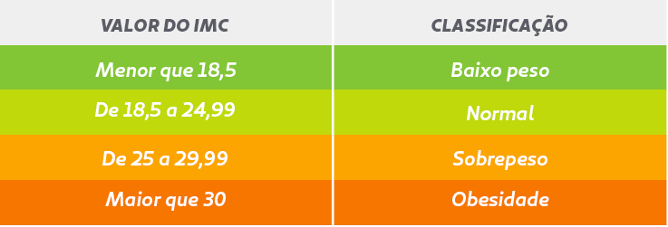

O que é o Índice de Massa Corporal?
O Índice de Massa Corporal (IMC) é uma das principais ferramentas, adotada inclusive pela Organização Mundial de Saúde (OMS), para calcular o chamado “peso ideal”.
Calculadora de IMC:
Peso (kg):
Altura (cm):
Fórmula do IMC:
IMC = Peso/(Altura x Altura).
